Глава 15. Автоколебательные цепи
15.1. Физические процессы в автоколебательных цепях15.2. Обобщенная схема автогенератора
15.3. LC-генератор с трансформаторной обратной связью. Классический метод анализа
15.4. LC-генератор с трансформаторной обратной связью. Операторный и частотный методы анализа
15.5. Трехточечные схемы генераторов
15.6. RС-генераторы
15.7. Автогенераторы с внутренней обратной связью
15.8. Анализ переходных процессов в автогенераторе методом медленно меняющихся амплитуд
Вопросы и задания для самопроверки
Глава 15. Автоколебательные цепи
15.1. Физические процессы в автоколебательных цепях
Автоколебательными называются активные электрические цепи, в которых без посторонних воздействий самостоятельно возникают электрические колебания. Такие колебания называются автоколебаниями, а сами электрические цепи, в которых возникают автоколебания, – автогенераторами (или, чаще, генераторами).
Автогенераторы используются в радиотехнике и связи для получения электромагнитных колебаний. В зависимости от формы вырабатываемых колебаний различают генераторы гармонических и негармонических колебаний. По принципу работы генераторы делятся на генераторы с внешней обратной связью и с внутренней обратной связью, т. е. с отрицательным сопротивлением. Наконец, различие в элементной базе пассивной части схемы генератора позволяет вести речь об LC-генераторах или о RC-генераторах. В качестве активных элементов в генераторах применяются электронные лампы, биполярные и полевые транзисторы, туннельные диоды и др.
В данной главе наибольшее внимание будет уделено LC-гене-раторам гармонических колебаний с внешней ОС, использующим в качестве активного элемента биполярные транзисторы. Однако следует указать, что, хотя изучение свойств автогенераторов производится на примере конкретных схем, результаты исследования носят достаточно общий характер.
Затем будут рассмотрены особенности построения RС-генераторов и генераторов с внутренней ОС.
Физические процессы в автоколебательных цепях. На рис. 15.1, а показан параллельный колебательный контур, состоящий из элементов L, С и G. Если контуру сообщить некоторое количество энергии, то в нем возникнут свободные колебания.
По первому закону Кирхгофа (ЗТК):

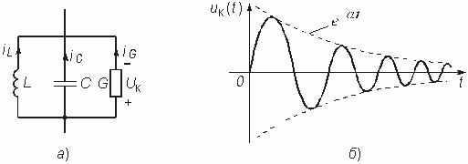
Каждое из слагаемых этого уравнения можно выразить через напряжение uк на элементах контура. Тогда

Дифференцируя данное уравнение по времени и деля обе его части на С, получаем
Equation Section 15

Напомним, что при сопротивлении контура R = l/ G > 2r или G < l/ (2r ) переходный процесс имеет колебательный характер.
Величина a
= G/
(2C) является коэффициентом затухания контура, а величина  – резонансной частотой контура. В этих обозначениях (15.1) перепишется в виде
– резонансной частотой контура. В этих обозначениях (15.1) перепишется в виде

Дифференциальное уравнение (15.2) имеет следующее решение:

где Umк – начальная амплитуда напряжения на контуре, зависящая от введенной в контур энергии;  – частота свободных собственных колебаний; q
– начальная фаза.
– частота свободных собственных колебаний; q
– начальная фаза.
Так как a = G/ (2C) > 0, то колебание (15.3) имеют затухающий характер (см. рис. 15.1, б, при q = 0), что объясняется потерями в контуре из-за наличия резистивной проводимости G. Чтобы превратить такой генератор в генератор незатухающих колебаний, нужно возмещать в нем потери, т. е. пополнять контур энергией.
Причем, если энергии в контур вводится ровно столько, сколько необходимо для компенсации потерь, то это эквивалентно внесению в контур отрицательной проводимости Gвн, при этом результирующая проводимость контура обращается в нуль. Тогда a = 0 и в контуре возникают незатухающие колебания.
В случае же, когда энергии в контур вводится больше, чем это необходимо для компенсации потерь (т. е. отрицательная проводимость Gвн больше G и, следовательно, Gвн + G < 0), в контуре возникают нарастающие по амплитуде колебания, так как коэффициент затухания становится отрицательным.
Энергию в контуре можно пополнять, например, за счет собственных колебаний, снятых с контура и усиленных усилителем. Работающая на таком принципе схема автогенератора показана на рис. 15.2.
Рассмотрим процесс возникновения колебаний в автогенераторе, или механизм самовозбуждения генератора, и установление колебаний определенной амплитуды, т. е. стационарный режим работы генератора.
Причиной возникновения колебаний в автогенераторе являются флуктуации (случайные возмущения) тока в элементах реальной схемы (за счет теплового движения электронов в активных элементах и резисторах, дробового эффекта и т. д.), а также за счет внешних помех.
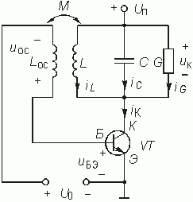
Флуктуации тока iК, протекающего через контур, вызывают флуктуации напряжения на контуре ик. Спектр этих случайных возмущений весьма широк и содержит составляющие всех частот.
Составляющие напряжения ик с частотами, близкими к резонансной частоте контура w 0, имеют наибольшую амплитуду, так как модуль комплексного эквивалентного сопротивления контура является наибольшим и равным R0э именно на резонансной частоте w 0. Выделенное на контуре гармоническое с частотой w 0 напряжение через цепь ОС, образованную вторичной обмоткой трансформатора, передается на вход транзистора, создавая напряжение ик. Это напряжение вызовет увеличение коллекторного тока iК, что, в свою очередь, приведет к увеличению напряжения на контуре ик. Как следствие этого увеличатся напряжение обратной связи uoc и напряжение ик и, значит, вновь увеличатся коллекторный ток и напряжение на контуре ик и т. д. Таким образом, в замкнутой системе автогенератора самовозбуждаются колебания частоты, близкой к резонансной частоте контура w 0.
Очевидно, важным условием возникновения колебаний является то, что фаза напряжения uБЭ должна быть такой, при которой увеличение напряжения ик вызывает увеличение коллекторного тока iК и, тем самым, порождает новое увеличение ик. Данное условие и есть условие баланса фаз. Баланс фаз достигается правильным включением вторичной обмотки трансформатора. При другом ее включении возрастание напряжения на контуре ик приведет к уменьшению коллекторного тока, т. е. баланс фаз нарушится и самовозбуждения не произойдет.
Обратная связь, при которой выполняется баланс фаз, является положительной ОС. В противном случае ОС отрицательная. Самовозбуждение автогенератора возможно только при наличии положительной ОС.
Процесс самовозбуждения колебаний в контуре с энергетической точки зрения объясняется тем, что от источника питания с помощью транзистора в контур за один период колебания поступает энергии больше, чем расходуется ее в резистивном сопротивлении контура. Это эквивалентно, как уже отмечалось ранее, внесению в контур отрицательной проводимости Gвн, превышающей по величине эквивалентную проводимость контура G, что приводит к отрицательному значению коэффициента затухания контура a и, следовательно, к возникновению в контуре нарастающих колебаний.
Пока амплитуда напряжения uБЭ была мала, работа происходила на линейном участке ВАХ транзистора. С увеличением амплитуды колебаний в контуре возрастает напряжение ОС uос и, следовательно, входное напряжение транзистора uБЭ. При этом все сильнее сказывается нелинейность ВАХ транзистора. Наконец, при достаточно больших амплитудах колебаний ток коллектора iК перестает увеличиваться, значения напряжения на контуре uк, обратной связи uос и входное uБЭ стабилизируются, в автогенераторе установится стационарный динамический режим с постоянной амплитудой колебаний и частотой генерации, близкой к резонансной частоте колебательного контура w 0. Таким образом, стационарные колебания в автогенераторе устанавливаются только благодаря наличию нелинейности ВАХ транзистора.
В стационарном режиме энергия, поступающая в контур, вся рассеивается в эквивалентной резистивной проводимости контура, т. е. вносимая в контур отрицательная проводимость Gвн оказывается равной эквивалентной проводимости G и полностью компенсируют ее; коэффициент затухания контура a обращается в нуль. В контуре существуют незатухающие гармонические колебания.
15.2. Обобщенная схема автогенератора
Из предыдущего рассмотрения следует, что схема автогенератора должна содержать активный элемент с нелинейной вольт-амперной характеристикой, колебательную систему (в данном случае контур), внешнюю цепь положительной ОС, по которой колебание с выхода колебательной системы подается на вход активного элемента. Такие автогенераторы являются генераторами с внешней ОС; структурная схема построения таких генераторов приведена на рис. 15.3.
Заметим, что нелинейный активный элемент с колебательной системой образуют нелинейный резонансный усилитель. Поэтому можно представить обобщенную структурную схему автогенератора с разомкнутой цепью обратной связи (рис. 14.17, а). Комплексная передаточная функция всей цепи

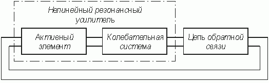
Для того, чтобы в генераторе происходило самовозбуждение колебаний, необходимо, чтобы модуль комплексного напряжения |Uос(jw )| на выходе схемы был больше модуля комплексного напряжения |Uвх(jw )| на входе схемы, откуда 
При приближении к стационарному режиму модуль комплексного коэффициента передачи усилителя |Hу(jw )| за счет влияния нелинейности начинает уменьшаться до тех пор, пока не наступит динамическое равновесие (см. § 14.3):

Это условие соответствует стационарному режиму и известно под названием баланса амплитуд. Учитывая, что

получаем фазовый сдвиг в разомкнутой цепи автогенератора

Баланс фаз, т. е. совпадение фаз напряжений на входе и выходе схемы рис. 14.17, а, наступает при j р(w ) = 2p . Таким образом, сдвиг фаз в цепи обратной связи зависит от сдвига фаз в усилителе и дополняет его до 2p . Если на частоте генерируемых колебаний усилитель вносит сдвиг фаз j у = p (как, например, в схеме рис. 15.2), то цепь обратной связи должна на этой же частоте вносить сдвиг фаз j ос(w ) = p . В схеме автогенератора рис. 15.2 поворот фазы напряжения uoc(t) на 180° достигается, как ранее отмечалось, соответствующим включением обмоток катушки индуктивности Loc.
15.3. LC-генератор с трансформаторной обратной связью
Дифференциальное уравнение генератора. Обратимся вновь к схеме рис. 15.2. По первому закону Кирхгофа

или

Эти уравнения отличаются от соответствующих уравнений одиночного колебательного контура, полученных в § 15.1, тем, что в правой части записан коллекторный ток iК.
Вольт-амперная характеристика транзистора iК = F(иБЭ – U0) в окрестности рабочей точки U0 является, вообще говоря, нелинейной, так как ток коллектора iК нелинейно зависит от напряжения иБЭ – U0. Из рис. 15.2 следует, что напряжение ОС, снимаемое с катушки индуктивности обратной связи Lос, равно uос = иБЭ – U0, поэтому в дальнейшем удобно рассматривать ВАХ iК = F(uос) = = iК(uос).
Заметим далее, что напряжение ОС uос вычисляется через коэффициент взаимной индуктивности М и ток в катушке L (см. §3.7)

В свою очередь, ток в катушке iL и напряжение на ней uк связаны соотношением uк = LdiL/ dt, поэтому напряжение ОС uос можно выразить через напряжение на контуре uк:

Вернемся к уравнению (15.4). Продифференцируем его по времени и разделим обе части на С:

В отличие от уравнения (15.1) для одиночного колебательного контура в правой части уравнения (15.6) присутствует вынуждающая составляющая diК(uос)/ dt. Производную функции iК(uос) будем искать как производную сложной функции:

где S(uос) = diК(uос)/ duос – дифференциальная крутизна ВАХ транзистора, нелинейно зависящая от напряжения uос.
При дифференцировании напряжения uос по времени учтено соотношение (15.5).
Подставив (15.7) в (15.6), получим дифференциальное уравнение автогенератора

где  – резонансная частота контура.
– резонансная частота контура.
Это дифференциальное уравнение является нелинейным, так как коэффициент при первой производной напряжения uк, в который входит крутизна S(uос), нелинейно зависит от напряжения обратной связи uос (или, что то же, от искомой переменной – напряжения на контуре). Уравнение (15.8) определяет все свойства автогенератора и позволяет установить условия самовозбуждения колебаний, особенности стационарного режима и характер переходных процессов в автогенераторе.
Условие возникновения колебаний. При определении условий самовозбуждения следует учесть, что амплитуда нарастающих колебаний в автогенераторе достаточно мала и работа автогенератора происходит на линейном участке ВАХ транзистора iК = F(uос). Иными словами, для малых амплитуд колебаний ВАХ можно аппроксимировать линейно-ломаной функцией, крутизна которой в рабочем диапазоне амплитуд напряжения является постоянной, не зависящей от напряжения uос, т. е. S(uос) = S. В этом случае дифференциальное уравнение автогенератора (15.8) становится линейным:

Перепишем его в виде

где  – эквивалентный коэффициент затухания
– эквивалентный коэффициент затухания
колебательного контура, включенного в цепь коллектора транзистора.
Сопоставление уравнения (15.9) с уравнением (15.2) для одиночного колебательного контура показывает, что при включении колебательного контура в коллекторную цепь транзистора коэффициент затухания контура a э уменьшится на величину SM/ 2LC, зависящую от взаимоиндукции М, т. е. от ОС:

где a = G/ 2С – коэффициент затухания свободных колебаний контура.
Чтобы в контуре возникли нарастающие по амплитуде колебания, необходимо сделать коэффициент a э < 0. Это возможно при условии SM/ LС > G/ C. Отсюда получаем значение коэффициента взаимной индукции М при котором в колебательном контуре возникнут нарастающие по амплитуде колебания:

Условие (15.10) называется условием самовозбуждения LC-ав-тогенератора. Величина Mкр = LG/ S называется критическим коэффициентом взаимной индукции. Колебания в автогенераторе могут возникнуть только при обратной связи с М > Mкр. При М < Mкр коэффициент затухания контура a э > 0 и колебание в контуре становится затухающим. Коэффициент a э в (15.9) можно представить в следующем виде:

где Gвн = —(SM/ L) – проводимость, вносимая в контур за счет действия обратной связи. Знак коэффициента М может меняться в зависимости от направления включения (согласно или встречно) вторичной обмотки трансформатора. При М > 0 вносимая проводимость оказывается отрицательной и если ее величина |Gвн| > G, что имеет место при М > Mкр, то a э < 0 и в контуре возникнут нарастающие по амплитуде колебания. Положительные значения М соответствуют положительной ОС, отрицательные – отрицательной ОС.
Эквивалентная схема колебательного контура, соответствующая уравнению (15.9) с a э из (15.11), приведена на рис. 15.4. Отрицательная общая проводимость контура G + Gвн < 0 при М > Mкр свидетельствует о том, что в контур поступает энергии больше, чем расходуется ее на активной проводимости контура G.
Стационарный режим работы. При больших амплитудах сигнала нелинейностью ВАХ транзистора iК = F(uос) пренебречь уже нельзя: в общем случае она должна аппроксимироваться степенным полиномом высокого порядка.
Ток в цепи коллектора в стационарном режиме будет из-за нелинейности ВАХ несинусоидальной периодической функцией времени и может быть представлен рядом Фурье
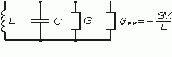
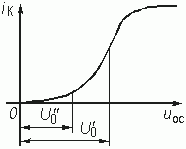

Падение напряжения uк на колебательном контуре, настроенном на частоту w 0, определяется в основном первой гармоникой коллекторного тока, так как сопротивление контура для тока этой гармоники является наибольшим (равным Rоэ = l/ G), а для остальных гармоник – достаточно малым. Напряжение ОС uос, определяемое (15.5), вследствие этого также будет гармоническим; его можно записать в виде

Введем понятие средней крутизны ВАХ

Она определяется отношением амплитуды Im1 первой гармоники тока iК, протекающего через нелинейный элемент, к амплитуде Umос, действующего на нелинейный элемент напряжения uос. Среднюю крутизну часто поэтому называют крутизной ВАХ по первой гармонике. Средняя крутизна Scp(Umос) зависит от амплитуды напряжения обратной связи Umос и от положения рабочей точки U0. На рис. 15.5 показана типичная ВАХ транзистора iК = = F(uос). Пусть рабочая точка выбрана на середине линейного участка характеристики (U0 = U0¢ ). При увеличении амплитуды напряжения Umос средняя крутизна, пока мы находимся в пределах линейного участка характеристики, остается неизменной. Затем средняя крутизна ВАХ падает (рис. 15.6, а). Если выбрать рабочую точку (U0 = U0¢ ¢ ) на нижнем загибе характеристики iК = = F(uос), где средняя крутизна мала, то по мере увеличения амплитуды Umос будут охватываться участки характеристики с большей крутизной и, следовательно, Scp(Umос) станет расти. После прохождения участка с наибольшей крутизной дальнейшее увеличение Umос приводит к уменьшению средней крутизны (рис. 15.6, б).
Дифференциальное уравнение (15.8) при работе генератора в режиме больших амплитуд является, вообще говоря, нелинейным, поскольку в коэффициент при duк/ dt входит средняя крутизна Scp(Umос), зависящая от амплитуды Umос напряжения ОС.
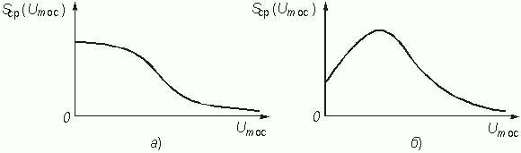
Однако в стационарном режиме, когда гармоническое напряжение на контуре uк характеризуется установившейся (стационарной) амплитудой Umк, гармоническое напряжение обратной связи uос также описывается установившейся (стационарной) амплитудой Umос. При этом средняя крутизна Scp(Umос) является постоянной величиной и дифференциальное уравнение (15.8) можно считать линейным:

В стационарном режиме генерируются незатухающие гармонические колебания. Это имеет место, когда

Отсюда установившееся (стационарное) значение средней крутизны равно

С учетом этого обозначения коэффициент затухания контура перепишем в виде

Из формулы (15.13) при a
э = 0 можно определить стационарную амплитуду  , которая соответствует точке пересечения кривой Sср(Umос) и прямой линии
, которая соответствует точке пересечения кривой Sср(Umос) и прямой линии  . Рис. 15.7 иллюстрирует процесс нахождения стационарной амплитуды для двух зависимостей средней крутизны, соответствующих различным положениям рабочей точки на ВАХ (см. рис. 15.5).
. Рис. 15.7 иллюстрирует процесс нахождения стационарной амплитуды для двух зависимостей средней крутизны, соответствующих различным положениям рабочей точки на ВАХ (см. рис. 15.5).
Частота генерируемых колебаний, определяемая как w
г = =  , в стационарном режиме при a
э = 0 совпадает с резонансной частотой колебательного контура w
0.
, в стационарном режиме при a
э = 0 совпадает с резонансной частотой колебательного контура w
0.
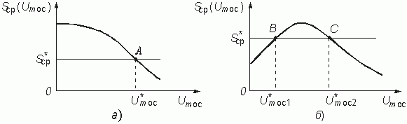
Устойчивость стационарного режима. Стационарный режим называется устойчивым, если отклонение D
Umос от стационарной амплитуды  с течением времени будет уменьшаться.
с течением времени будет уменьшаться.
Рассмотрим стационарный режим в точке А на рис. 15.7, а. Отклонение —D
Umос от амплитуды  приведет к Sср(Umос) >
приведет к Sср(Umос) >  и, в соответствии с (15.13), к a
э < 0, т. е. амплитуда колебаний будет увеличиваться и приближаться к стационарному значению. При отклонении +D
Umос средняя крутизна Sср(Umос) <
и, в соответствии с (15.13), к a
э < 0, т. е. амплитуда колебаний будет увеличиваться и приближаться к стационарному значению. При отклонении +D
Umос средняя крутизна Sср(Umос) <  , т. е. коэффициент затухания a
э, станет положительным и амплитуда уменьшится, вновь приближаясь к стационарной. Таким образом, точка А соответствует устойчивому стационарному режиму.
, т. е. коэффициент затухания a
э, станет положительным и амплитуда уменьшится, вновь приближаясь к стационарной. Таким образом, точка А соответствует устойчивому стационарному режиму.
Точка В на рис. 15.7, б соответствует неустойчивому режиму, так как отклонение амплитуды Umос от стационарного значения  в сторону уменьшения ведет к Sср(Umос) <
в сторону уменьшения ведет к Sср(Umос) <  и a
э > 0, т. е. к дальнейшему уменьшению амплитуды Umос, а отклонение амплитуды Umос от стационарной в сторону увеличения вызовет дальнейший ее рост и переход в следующее стационарное состояние, отмеченное точкой С.
и a
э > 0, т. е. к дальнейшему уменьшению амплитуды Umос, а отклонение амплитуды Umос от стационарной в сторону увеличения вызовет дальнейший ее рост и переход в следующее стационарное состояние, отмеченное точкой С.
Стационарное состояние в точке С является устойчивым, в чем легко убедиться с помощью рассуждений, аналогичных приведенным выше.
Можно заметить, что справедливо следующее утверждение: пересечение прямой линии  с кривой средней крутизны Sср(Umос) дает устойчивые значения стационарной амплитуды
с кривой средней крутизны Sср(Umос) дает устойчивые значения стационарной амплитуды  , если на этом участке dSср(Umос)/
dUmос < 0 и неустойчивые значения – если dSср(Umос)/
dUmос > 0. Поэтому условие dSср(Umос)/
dUmос < < 0 можно считать условием устойчивости стационарного режима.
, если на этом участке dSср(Umос)/
dUmос < 0 и неустойчивые значения – если dSср(Umос)/
dUmос > 0. Поэтому условие dSср(Umос)/
dUmос < < 0 можно считать условием устойчивости стационарного режима.
Режим самовозбуждения. Будем менять коэффициент взаимной индукции М и наблюдать за процессом возникновения колебаний. Этот процесс зависит также от выбора рабочей точки на ВАХ (напряжения смещения U0).
Выбору рабочей точки в области наибольшей крутизны (напряжение смещения U0¢ на рис. 15.5) соответствует график средней крутизны Sср(Umос), показанной на рис. 15.8, а.
При изменении параметра М меняется значение средней крутизны  = LG/
M. На рис. 15.8, а изображены несколько прямых
= LG/
M. На рис. 15.8, а изображены несколько прямых  , соответствующих различным М.
, соответствующих различным М.
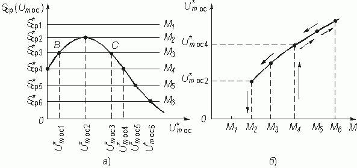
При М = М1 колебания в автогенераторе возникнуть не могут, поскольку  > Sср(Umос) и коэффициент затухания контура a
э > 0, значит, любые случайные флуктуации напряжения Umос будут быстро затухать.
> Sср(Umос) и коэффициент затухания контура a
э > 0, значит, любые случайные флуктуации напряжения Umос будут быстро затухать.
Увеличение М до значения М2 приводит к  = Sср(Umос) и a
э = 0. Дальнейший рост М снижает значение
= Sср(Umос) и a
э = 0. Дальнейший рост М снижает значение  ; при этом коэффициент a
э становится отрицательным, т. е. a
э < 0. Таким образом, начиная с M
; при этом коэффициент a
э становится отрицательным, т. е. a
э < 0. Таким образом, начиная с M  М2, в автогенераторе возникают незатухающие колебания с соответствующими стационарными амплитудами
М2, в автогенераторе возникают незатухающие колебания с соответствующими стационарными амплитудами  . С увеличением М стационарная амплитуда колебаний
. С увеличением М стационарная амплитуда колебаний  плавно нарастает. Уменьшение М вызовет плавное уменьшение значений стационарной амплитуды
плавно нарастает. Уменьшение М вызовет плавное уменьшение значений стационарной амплитуды  . График зависимости стационарной амплитуды
. График зависимости стационарной амплитуды  генерируемых в автогенераторе колебаний от коэффициента взаимной индукции М приведен на рис. 15.8, б. Такой режим самовозбуждения генератора, при котором амплитуда колебаний плавно нарастает с увеличением М, называется мягким режимом самовозбуждения.
генерируемых в автогенераторе колебаний от коэффициента взаимной индукции М приведен на рис. 15.8, б. Такой режим самовозбуждения генератора, при котором амплитуда колебаний плавно нарастает с увеличением М, называется мягким режимом самовозбуждения.
Если рабочую точку выбрать на нижнем загибе ВАХ, как это показано на рис. 15.5 при U0 = U0¢ ¢ , то график средней крутизны Sср(Umос) имеет вид, показанный на рисунке 15.9, а.
При М, равном М1, М2 и М3, наличие малых флуктуаций напряжения Umос не приведет к установлению стационарной амплитуды, поскольку при значениях  , равных
, равных  ,
,  и
и  , коэффициент затухания контура a
э будет положительным.
, коэффициент затухания контура a
э будет положительным.
Только начиная с М = М4, когда Sср(Umос) =  и a
э = 0, малые флуктуации амплитуды напряжения обратной связи начинают быстро расти, пока не установится устойчивое стационарное значение амплитуды
и a
э = 0, малые флуктуации амплитуды напряжения обратной связи начинают быстро расти, пока не установится устойчивое стационарное значение амплитуды  . Дальнейшее увеличение М ведет к плавному росту стационарной амплитуды.
. Дальнейшее увеличение М ведет к плавному росту стационарной амплитуды.
При плавном уменьшении обратной связи (коэффициента М) стационарная амплитуда  будет также плавно уменьшаться. Колебания сорвутся при значении М = М2, меньшем М4, когда перестанет выполняться условие стационарности Sср(Umос) =
будет также плавно уменьшаться. Колебания сорвутся при значении М = М2, меньшем М4, когда перестанет выполняться условие стационарности Sср(Umос) =  . На рис. 15.9, б дан график изменения амплитуды
. На рис. 15.9, б дан график изменения амплитуды  в зависимости от М. Такой режим, когда колебания возбуждаются при большем значении М, а срываются при меньшем значении М, называется жестким режимом самовозбуждения.
в зависимости от М. Такой режим, когда колебания возбуждаются при большем значении М, а срываются при меньшем значении М, называется жестким режимом самовозбуждения.
Достоинством мягкого режима самовозбуждения является плавное изменение амплитуды  при изменении коэффициента М; достоинством жесткого режима является высокий КПД за счет работы с отсечкой коллекторного тока.
при изменении коэффициента М; достоинством жесткого режима является высокий КПД за счет работы с отсечкой коллекторного тока.
Можно объединить достоинства мягкого и жесткого режимов самовозбуждения, если ввести в автогенератор цепь автоматического смещения RБ СБ (рис. 15.10, а). Исходное смещение U0 выбирают таким, при котором рабочая точка находится на участке наибольшей крутизны ВАХ, что соответствует мягкому режиму. При нарастании амплитуды колебаний uос в цепи базы за счет нелинейности ВАХ iБ = F(uБЭ) произойдет детектирование колебаний. Возрастание постоянной составляющей тока базы IБO, которая на резистивном сопротивлении RБ создает напряжение IБO× RБ, приводит к уменьшению результирующего напряжения смещения U0 – IБO× RБ и, как результат, к сдвигу рабочей точки влево (рис. 15.10, б) к нижнему загибу ВАХ iК = F(uБЭ).
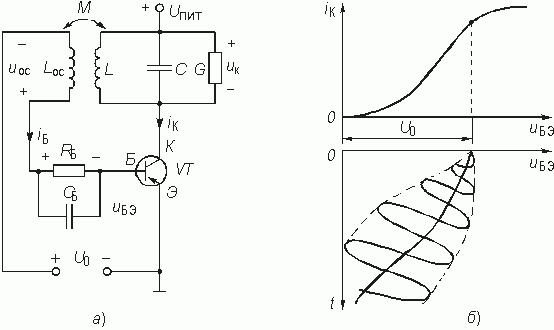
Переходный процесс заканчивается (при соответствующем значении RБ) установлением жесткого стационарного режима с более высоким КПД.
15.4. LC-генератор с трансформаторной обратной связью. Операторный и частотный методы анализа
Характеристическое уравнение. Операторный метод анализа автогенератора состоит в исследовании характеристического уравнения (14.11) цепи с ОС и выявлении из этого уравнения условий самовозбуждения. Записать характеристическое уравнение генератора можно было бы непосредственно по дифференциальному уравнению (15.9), однако это можно сделать и не прибегая к составлению дифференциального уравнения. Генератор как цепь с ОС описывается характеристическим уравнением (см. гл. 14):

Схема замещения усилителя на транзисторе дана на рис. 15.11 (см. § 3.11). Здесь Rвх и Rвых – входное и выходное сопротивления транзистора; Zк – комплексное сопротивление параллельного контура.
Операторная передаточная функция такого усилителя равна:

В свою очередь, из рис. 15.11 следует, что

Поэтому

На практике в качестве усилительного элемента используют такой транзистор, у которого Rвых достаточно велико. В этом случае
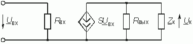

Учитывая, что сопротивление параллельного контура

получаем окончательное выражение передаточной функции усилителя

Передаточную функцию цепи ОС легко найти, если вспомнить (см. § 15.5), что

или для изображений по Лапласу

Отсюда

После того, как получены выражения для Ну(р) и Нос(р), характеристическое уравнение (15.14) можно записать в следующем виде:

После простейших преобразований получим:

или

В режиме самовозбуждения рабочая точка располагается на линейном участке ВАХ и, следовательно, крутизна S является постоянной величиной.
Корни характеристического уравнения (15.16)

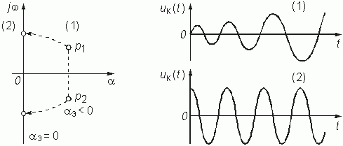
где  – частота свободных колебаний в контуре.
– частота свободных колебаний в контуре.
Чтобы в генераторе возникли незатухающие колебания корни должны лежать в правой полуплоскости комплексной переменной р (рис. 15.12, случай 1), т. е. a э < 0. Таким образом, условие самовозбуждения примет вид M > LG/ S, что совпадает с выражением (15.10).
В стационарном режиме работы генератора корни перемещаются на мнимую ось комплексной плоскости р (рис. 15.12, случай 2). Из условия a э = 0 можно найти стационарное значение средней крутизны:

Анализ в частотной области. Заменяя в выражениях для операторных передаточных функций оператор р на оператор jw , запишем передаточную функцию цепи с разомкнутой ОС:

Из условия баланса фаз на частоте генерации

убеждаемся, что генератор возбуждается на частоте w г = w 0.
Из условия баланса амплитуд, которое должно выполняться на частоте генерации
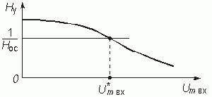
находим, что самовозбуждение происходит при M > LG/ S, что совпадает с полученными ранее результатами.
Баланс амплитуд на частоте генерации  позволяет определить стационарное значение средней крутизны
позволяет определить стационарное значение средней крутизны

Можно построить зависимость Ну на частоте генерации от стационарной амплитуды колебаний Umвx (рис. 15.13). Функцию Ну(Umвx) легко получить из формулы (15.15), зная среднюю крутизну Sср(Umвx) и сопротивление контура на частоте генерации Zк(w г) = 1/G:
 .
.
В стационарном режиме выполняется условие

Воспользовавшись этим условием, можно найти стационарную амплитуду колебаний на входе усилителя, как это сделано на рис. 15.13. Стационарная амплитуда колебаний на выходе генератора определяется по формуле

15.5. Трехточечные схемы генераторов
Индуктивная трехточка. Недостатком схем LC-генераторов с трансформаторной обратной связью является наличие двух индуктивно связанных катушек. Поэтому на практике чаще используют схемы LС-генераторов с автотрансформаторной ОС, в которых напряжение ОС снимается с части колебательного контура. Такая схема изображена на рис. 15.14, а. Она известна также под названием схемы индуктивной трехточки.
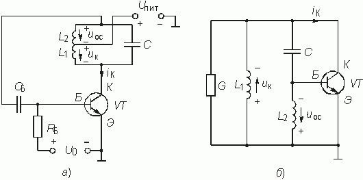
Элементы С, L1 и L2 образуют колебательный контур; резистор RБ является элементом цепи автоматического смещения, через который протекает постоянная составляющая тока базы; конденсатор СБ предотвращает попадание напряжения питания Uпит на базу и влияет на постоянную времени цепи автосмещения. На рис. 15.14, б приведена эквивалентная схема индуктивной трехточки по переменному току, т. е. цепи питания и смещения на рисунке не показаны.
Обычно полагают, что входное сопротивление транзистора настолько велико, что током базы можно пренебречь. В этом случае, как видно из рис. 15.14, б, элементы С, L1 и L2, образуют трехэлементный реактивный двухполюсник, в котором сначала происходит резонанс токов, а затем резонанс напряжений в контуре СL2. Частотные характеристики реактивного и полного сопротивлений колебательного контура показаны на рис. 15.15, а и б.
Генерация колебаний происходит на частоте резонанса токов

Сопротивление контура на этой частоте является чисто резистивным и принимает максимальное значение, равное 1/ G.
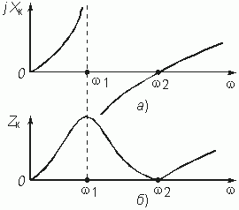
Цепью ОС в этой схеме служит делитель напряжения, образованный емкостью С и индуктивностью L2. Действительно, напряжение, снимаемое с выхода усилительного элемента (транзистора), приложено к колебательному контуру или, что то же, к ветви CL2. Напряжение ОС снимается с индуктивности L2 и подается на вход усилительного элемента. Усилительный каскад на одном транзисторе поворачивает фазу сигнала на 180° . Для соблюдения баланса фаз цепь обратной связи также должна вносить фазовый сдвиг 180° . Это и происходит в действительности. Ток в ветви CL2 из-за емкостного характера ее сопротивления опережает напряжение на контуре uк(t) на 90° . В свою очередь, напряжение uос(t) на индуктивности L2 опережает этот ток еще на 90° . Таким образом, сдвиг фаз между напряжениями uк(t) и uос(t) составляет 180° .
Перейдем к анализу работы генератора. Для определения условий самовозбуждения составим характеристическое уравнение генератора:

Передаточная функция усилителя, как и в случае LC-генера-тора с трансформаторной обратной связью, равна

где Zк(p) – операторное сопротивление контура:

После несложных преобразований выражения для Zк(p) и подстановки его в (15.18) получим

Передаточная функция цепи ОС имеет вид

Запишем передаточную функцию цепи с разомкнутой ОС

Теперь легко получить характеристическое уравнение. С учетом (15.17) имеем

Заметим попутно, что данному характеристическому уравнению соответствует дифференциальное уравнение генератора – индуктивной трехточки

Для анализа устойчивости воспользуемся критерием Рауса— Гурвица и составим определитель Гурвица (см. гл. 14):

Цепь будет неустойчивой и в генераторе произойдет самовозбуждение, если хотя бы один минор этого определителя является отрицательным, например,

Раскрывая определитель, получаем

или

Отсюда условие самовозбуждения имеет вид

Для анализа работы генератора в частотной области необходимо использовать соотношения баланса амплитуд и баланса фаз

Поскольку на частоте генерации w г сопротивления контура Zк(w ) = 1/ G, комплексная передаточная функция усилителя принимает в соответствии с (15.18) простой вид

Комплексная передаточная функция цепи ОС

после подстановки значения частоты генерации  она будет иметь вид
она будет иметь вид

В режиме самовозбуждения, т. е. когда

имеем:

что совпадает с выражением (15.20).
Для стационарного режима, когда выполняется баланс амплитуд

можно определить стационарное значение средней крутизны:

Из анализа выражений Hу(jw г) и Hос(jw г) видно, что j у(w г) + + j ос(w г) = 2p , т. е. баланс фаз выполняется.
Емкостная трехточка. Если в предыдущей схеме использовать реактивный двухполюсник с обратной частотной зависимостью сопротивления, то полученная схема будет называться емкостной трехточкой (рис. 15.16). Генерация колебаний в этой схеме будет происходить на частоте резонанса токов

когда сопротивление колебательного контура будет активным Zк(w )= 1/ G и максимальным по величине.
Анализ данной схемы практически ничем не отличается от анализа индуктивной трехточки. Для иллюстрации проведем анализ в частотной области. Исследование характеристического уравнения генератора предлагаем провести самостоятельно.
Комплексная передаточная функция усилителя на частоте генерации была получена ранее:

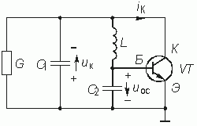
Цепь обратной связи представляет собой делитель напряжения, образованный индуктивностью L и емкостью С2. Комплексная передаточная функция цепи обратной связи

на частоте генерации w г принимает вид

Из неравенства  определим условия самовозбуждения емкостной трехточки
определим условия самовозбуждения емкостной трехточки

Из баланса амплитуд определяется стационарное значение средней крутизны

15.6. RС-генераторы
RC-генератор с мостом Вина. На сравнительно низких частотах, где реализация LC-контуров становится затруднительной из-за больших габаритов и массы, низкой добротности и невозможности перестройки, используют RС-автогенераторы. Они представляют собой комбинацию активных четырехполюсников (усилителей) и пассивных RС-цепей для создания ОС.
На рис. 15.17, а показана одна из таких схем (RС-генератор с мостом Вина), которая представляет собой усилитель с коэффициентом передачи К, между входом и выходом которого включена RС-цепь. Усилитель с заданным коэффициентом передачи можно реализовать на ОУ (см. рис. 2.17) по схеме неинвертирующего масштабного усилителя.
Для составления характеристического уравнения (15.14) достаточно найти Нос(р), так как Ну(р) = К. Схема генератора с разомкнутой ОС приведена на рис. 15.17, б. Передаточную функцию цепи ОС, являющейся Г-образным четырехполюсником, будем искать в виде

где Z1(p) – операторное сопротивление последовательно соединенных емкости C1 и сопротивления R1:
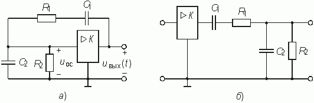

Z2(p) – операторное сопротивление соединенных параллельно емкости C2 и сопротивления R2

После подстановки в формулу (15.21) выражений Z1(p) и Z2(p) получим

Характеристическое уравнение (15.14) примет вид:

или
 ,
,
где 
Режиму самовозбуждения соответствует расположение корней характеристического уравнения (15.14) в правой полуплоскости, что имеет место при a э < 0, т. е. при

Из данного условия следует, что самовозбуждение генератора наступает при коэффициенте передачи усилителя

или

Если выбрать R1 = R2 и C1 = C2, то колебания на выходе генератора появятся при K > 3.
В стационарном режиме a э = 0. Характеристическое уравнение (15.14) в этом случае принимает вид

Его корни лежат на мнимой оси плоскости р и равны

Таким образом, генерация происходит на частоте w г = w 0.
Анализ работы RС-генератора с мостом Вина можно провести также в частотной области. Про усилитель известно, что Hу(w ) = К и j у(w )= 0 на всех частотах. Комплексную передаточную функцию цепи ОС Нос(jw ) получим из (15.22) заменой оператора р на jw , преобразовав предварительно (15.22) к виду

Откуда после замены р на jw , имеем

Поскольку усилитель не вносит фазового сдвига, для выполнения баланса фаз требуется обеспечить условие j ос(w г) = 0. Оно выполняется тогда, когда передаточная функция цепи ОС является вещественной, т. е. ее мнимая часть обращается в нуль. Таким образом, на частоте генерации

Из этого условия определяется частота генерации

Значение передаточной функции на этой частоте

Из условия самовозбуждения Hу(w г)Нос(w г) > 1 находим коэффициент усиления К, при котором на выходе генератора возникают незатухающие гармонические колебания:
Стационарное значение коэффициента усиления усилителя определяется балансом амплитуд:

RC-генератор с лестничной схемой обратной связи. На рис 15.18, а показана схема такого генератора, представляющая собой однокаскадный транзисторный усилитель, между входом и выходом которого включен лестничный пассивный RC четырехполюсник (для упрощения рисунка цепь смещения на нем не приведена).
Для возникновения генерации колебаний необходимо, чтобы напряжение обратной связи, подаваемое на вход генератора, непрерывно возрастало. Это возможно только тогда, когда усиление усилительного каскада больше ослабления, вносимого цепью обратной связи. Кроме того, должно выполняться условие баланса фаз. Последнее означает, что поскольку один каскад транзисторного усилителя вносит сдвиг фаз, равный 180° , то цепь обратной связи также должна вносить сдвиг фаз 180° , чтобы общий сдвиг фаз равнялся 0° (или 360° ).
Однако простейшее RС-звено вносит сдвиг фаз, не превышающий 90° . Поэтому необходимо взять число звеньев не меньше трех. Зависимость сдвига фаз от частоты RС-цепи из трех звеньев показана на рис. 15.18, б. Элементы RС-цепи рассчитывают так, чтобы на частоте генерации получить сдвиг фаз 180° .
В стационарном режиме, кроме баланса фаз, выполняется также и баланс амплитуд. При этом усиление усилительного каскада становится равным ослаблению цепи ОС, амплитуда напряжения цепи обратной связи, а значит и выходного, остается постоянной.
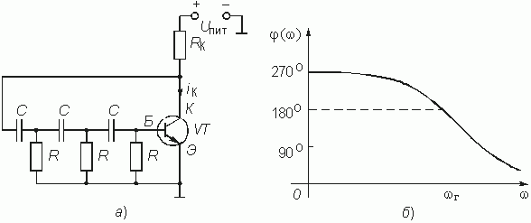
Если выбрать сопротивление коллекторной цепи транзистора RК  R, чтобы избежать влияния на работу транзистора цепи ОС, то операторная передаточная функция усилительного каскада определится, как и в LC-генераторах, следующей формулой:
R, чтобы избежать влияния на работу транзистора цепи ОС, то операторная передаточная функция усилительного каскада определится, как и в LC-генераторах, следующей формулой:

Операторную передаточную функцию лестничной цепи обратной связи, нагруженной на транзистор с большим входным сопротивлением, т. е. работающей практически на холостом ходу, получим из условия H(р) = 1/ A11. Параметр A11 лестничной схемы найдем, воспользовавшись матричным методом расчета четырехполюсников (гл. 12). Представим лестничную схему как каскадное соединение Т-образного и П-образного четырехполюсников.
Тогда матрица А лестничной схемы запишется в виде

Предлагаем читателям самостоятельно получить элементы А-матриц четырехполюсников. Они имеют вид:

При этом нет необходимости осуществлять полностью перемножение матриц. Для получения коэффициента A11 результирующей А-матрицы лестничной цепи ОС достаточно перемножить первую строку и первый столбец данных матриц. В итоге будем иметь

и

Для нахождения условий возникновения генерации исследуем характеристическое уравнение генератора

После подстановки в него Ну(р) и Нос(р) получим следующее уравнение:

Цепь является неустойчивой, если

или

Раскрывая определитель D1, придем к неравенству

или SRK > 29. Поскольку произведение SRK есть ни что иное как усиление транзисторного усилительного каскада, то это условие означает, что для самовозбуждения генератора усиление транзисторного каскада должно превышать 29 единиц.
Переход из комплексной плоскости р в частотную область осуществляется заменой р на jw .
Усилитель имеет комплексную передаточную функцию

Цепь обратной связи описывается комплексной передаточной функцией Hос(jw ), полученной из (15.24):

Из баланса фаз j y(w г) + j oc(w г) = 2p следует, что j oc(w r) = p . Это будет иметь место при

откуда находится частота генерации  .
.
Передаточная функция Hос(jw г) равна

или

Подстановка полученных значений Hy(w г) и Hoc(w г) в условие амплитуд

даст SRK > 29, что совпадает с полученным ранее результатом.
В стационарном режиме можно рассчитать значение средней крутизны

Недостатком RС-генераторов является то, что в стационарном режиме за счет нелинейности ВАХ (благодаря которой и устанавливается амплитуда колебаний) происходит искажение формы тока iK в цепи коллектора. Выходное напряжение в RС-автогенераторе снимается с резистора RK и имеет ту же форму, что и ток iK, т. е. является несинусоидальным.
Для получения формы колебаний, близкой к синусоидальной, нужно, чтобы колебания не выходили за пределы линейного участка ВАХ. Поэтому на практике рост колебаний ограничивается не нелинейностью транзистора, а специальным нелинейным элементом (НЭ), в качестве которого используются полупроводниковые или металлические терморезисторы.
15.7. Автогенераторы с внутренней обратной связью
Ранее была получена одна из форм дифференциального уравнения автогенератора с внешней ОС (15.9)

с коэффициентом a э, определяемым формулой (15.11):

Здесь Gвн – проводимость, вносимая в колебательный контур за счет действия внешней ОС. Стационарному режиму соответствует равенство Gвн = —G. Условие возникновения колебаний удовлетворяется при Gвн < 0 и |Gвн| > G.
Сравнение данного дифференциального уравнения с дифференциальным уравнением одиночного колебательного контура (15.2) позволяет составить эквивалентную схему генератора. Она дана на рис. 15.4 и отличается от схемы обычного контура наличием в ней отрицательной проводимости.
Отрицательную проводимость можно получать не только за счет действия внешней ОС, но и с помощью НЭ с ВАХ, имеющей падающий участок. Электронные приборы, являющиеся резистив-ными нелинейными элементами с падающими участками ВАХ i = F(u), называются приборами с отрицательным сопротивлением. В частности, таким прибором является туннельный диод.
Генераторы, построенные на приборах с отрицательным сопротивлением, не содержат внешней цепи ОС и называются поэтому генераторами с внутренней ОС.
На рис. 15.19, а приведена ВАХ туннельного диода.
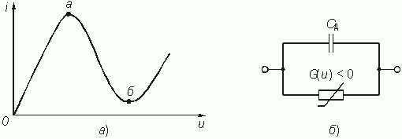
На участке а—б дифференциальная проводимость G(u) = di/ du < 0.
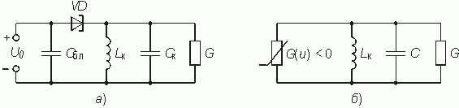
Эквивалентная схема туннельного диода, соответствующая падающему участку характеристики, представляет собой параллельное соединение нелинейной отрицательной проводимости диода G(u), зависящей от приложенного к нему напряжения и, и емкости Сд р-п перехода (рис. 15.19, б).
Схема генератора с внутренней ОС, выполненного на туннельном диоде, изображена на рис. 15.20, а. При помощи напряжения смещения U0 рабочая точка устанавливается примерно в середине падающего участка ВАХ диода. Блокировочная емкость Сбл образует путь для переменного тока генерируемой частоты. Заменив туннельный диод параллельным соединением отрицательной проводимости G(u) и емкости Сд перейдем к эквивалентной схеме генератора по переменному току. Она дана на рис. 15.20, б. Емкость эквивалентной схемы С = Ск + Сд. Данная эквивалентная схема полностью удовлетворяет приведенному в начале раздела дифференциальному уравнению.
Генератор на туннельном диоде является генератором почти гармонических колебаний, и анализ его работы можно провести так же, как и анализ работы генератора с внешней ОС.
Введем понятие средней проводимости НЭ Gcp(Um1) < 0 по первой гармонике с амплитудой Um1. Графики зависимостей, |Gcp(Um1)| от амплитуды Um1 при различных напряжениях смещения U0 приведены на рис. 15.21. На нем же показаны различные значения эквивалентной проводимости контура G.
Возбуждаются колебания при |Gcp(Um1)| > G. Стационарные амплитуды колебаний  устанавливаются при |Gcp(Um1)| = G.
устанавливаются при |Gcp(Um1)| = G.
Проводя анализ зависимостей рис. 15.21 (подобный анализ зависимостей выполнен с помощью рис. 15.8 и 15.9 для генераторов с внешней ОС), можно убедиться, что в генераторах с внутренней ОС возможны мягкий и жесткий режимы самовозбуждения (рис. 15.22).
Мягкий режим самовозбуждения происходит при напряжениях смещения 0,15 B < U0 < 0,3 В, жесткий режим – при U0 > 0,3 В. На рис. 15.21 на кривой средней проводимости |Gcp(Um1)|, полученной при U0 = 0,4 В показаны стационарные точки А¢
, А¢
¢
и А¢
¢
¢
. Колебания возникают при значении эквивалентной проводимости контура G¢
(точка А¢
). Амплитуда колебаний равна  . При увеличении проводимости G стационарная амплитуда
. При увеличении проводимости G стационарная амплитуда  уменьшается, срыв колебаний происходит при G¢
¢
¢
(точка А¢
¢
¢
). Поэтому жесткому режиму самовозбуждения соответствует сплошная кривая на рис. 15.22. Мягкому режиму возбуждения соответствует пунктирная кривая, полученная для средней проводимости при U0 = 0,3 В.
уменьшается, срыв колебаний происходит при G¢
¢
¢
(точка А¢
¢
¢
). Поэтому жесткому режиму самовозбуждения соответствует сплошная кривая на рис. 15.22. Мягкому режиму возбуждения соответствует пунктирная кривая, полученная для средней проводимости при U0 = 0,3 В.
15.8. Анализ переходных процессов в автогенераторе методом медленно меняющихся амплитуд
При исследовании условий самовозбуждения и стационарного режима работы автогенератора принимались во внимание следующие обстоятельства. При самовозбуждении амплитуда нарастающих колебаний в автогенераторе мала и работа генератора происходит на линейном участке ВАХ транзистора iк = F(uк), на котором крутизна транзистора  является постоянной величиной, не зависящей от напряжения uoc, т. е.
является постоянной величиной, не зависящей от напряжения uoc, т. е.  . В этом случае дифференциальное уравнение автогенератора (15.8) становится линейным.
. В этом случае дифференциальное уравнение автогенератора (15.8) становится линейным.
В стационарном режиме, когда амплитуды гармонического колебания на контуре автогенератора Umк и гармонического колебания обратной связи Umoc являются установившимися, средняя крутизна  в уравнении (15.8) является также постоянной величиной и дифференциальное уравнение автогенератора снова можно считать линейным:
в уравнении (15.8) является также постоянной величиной и дифференциальное уравнение автогенератора снова можно считать линейным:
 .
.
Из решения этого уравнения определялись условия самовозбуждения, амплитуда и частота генерируемых колебаний.
При анализе переходного режима автогенератора, когда амплитуды колебаний напряжения на контуре и напряжения обратной связи изменяюется от очень малых величин Umк(0) и Umoc(0), вызванных флуктуационными процессами в автогенераторе, до установившихся значений, считать крутизну  постоянной уже невозможно; дифференциальное уравнение автогенератора (15.8) является нелинейным. Поскольку способов точного аналитического решения нелинейного дифференциального уравнения второго порядка не существует воспользуемся для его решения приближенным методом медленно меняющихся амплитуд (ММА).
постоянной уже невозможно; дифференциальное уравнение автогенератора (15.8) является нелинейным. Поскольку способов точного аналитического решения нелинейного дифференциального уравнения второго порядка не существует воспользуемся для его решения приближенным методом медленно меняющихся амплитуд (ММА).
Метод ММА применяется для решения нелинейных дифференциальных уравнений с малым параметром. Этот метод введен в радиотехнику впервые Ван-дер-Полем, который рассмотрел ряд задач, связанных с установлением колебаний в ламповых генераторах и других колебательных системах. В дальнейшем этот метод получил обоснование в работах академиков Л.И. Мандельштама, Н.Д. Папалекси, А.А. Андронова и их учеников. Особо следует отметить работы академиков Н.Н. Боголюбова, Н.М. Крылова, а также Ю.А. Митропольского, посвященные развитию и метода ММА (или, как он часто называется, метода укороченных уравнений).
Поскольку в автогенераторах для повышения стабильности частоты генерируемых колебаний и подавления высших гармоник тока коллектора, являющихся продуктом нелинейности ВАХ транзистора, используется высокодобротный контур (Q  1), то амплитуда напряжения на контуре, а также амплитуда напряжения обратной связи, изменяются так медленно, что их приращение
1), то амплитуда напряжения на контуре, а также амплитуда напряжения обратной связи, изменяются так медленно, что их приращение  за время периода колебаний T много меньше самой амплитуды колебаний
за время периода колебаний T много меньше самой амплитуды колебаний  . Это условие “малости” изменения амплитуды колебаний и будет использовано для анализа переходных процессов в автогенераторе.
. Это условие “малости” изменения амплитуды колебаний и будет использовано для анализа переходных процессов в автогенераторе.
Покажем, что указанное условие “малости” изменения амплитуды колебаний в автогенераторе,  , действительно выполняется при больших добротностях контура Q. Напряжение на колебательном контуре автогенератора изменяется по закону
, действительно выполняется при больших добротностях контура Q. Напряжение на колебательном контуре автогенератора изменяется по закону
 ,
,
где  – коэффициент затухания контура; U0 – начальное значение амплитуды колебаний, вызванное флуктуациями тока в транзисторе; w
0 – частота свободных колебаний в контуре.
– коэффициент затухания контура; U0 – начальное значение амплитуды колебаний, вызванное флуктуациями тока в транзисторе; w
0 – частота свободных колебаний в контуре.
Введем обозначение

и перепишем выражение для u(t):

где Um(t) – описывает закон изменения амплитуды автоколебаний во времени.
Продифференцировав (15.25), найдем скорость изменения амплитуды

Перепишем (15.26) в приращениях

Пусть отрезок времени D
t = T, тогда  . Если a
T
. Если a
T  1, то условие
1, то условие  выполняется. Чтобы убедиться в этом, выразим декремент затухания a
T параллельного контура через добротность Q:
выполняется. Чтобы убедиться в этом, выразим декремент затухания a
T параллельного контура через добротность Q:

где  – добротность контура; r
– характеристическое сопротивление контура.
– добротность контура; r
– характеристическое сопротивление контура.
Для контура высокой добротности (Q  1) декремент затухания a
T
1) декремент затухания a
T  1, поэтому
1, поэтому
 ,
,
в чем и требовалось убедиться.
Воспользуется условием (15.29) для перехода от полного дифференциального уравнения автогенератора (15.8) к укороченному.
Перепишем (15.29), разделив правую и левую части неравенства на период колебаний
 .
.
Перейдем снова к бесконечно малым приращениям амплитуды колебаний, полагая, что период колебаний достаточно мал по сравнению со временем изменения амплитуды
 .
.
Неравенство (15.30) еще более усилится, если правую часть умножим на 2p :
 .
.
Продифференцировав (15.31), получим неравенство для 2-ой производной
 .
.
Воспользуемся (15.31) и (15.32) для перехода от дифференциального уравнения автогенератора (15.8), составленного относительно напряжения на контуре uк(t), к дифференциальному уравнению, составленному относительно огибающей амплитуды этого напряжения Umк(t). Тем самым удастся понизить порядок дифференциального уравнения.
Вычислим первую и вторую производные выражения uк(t) =  и учтем неравенства (15.31) и (15.32):
и учтем неравенства (15.31) и (15.32):


Подставим (15.33) и (15.34) в уравнение автогенератора (15.8):

После преобразования этого выражения имеем окончательно:

Получили так называемое “укороченное” нелинейное дифференциальное уравнение 1-го порядка для медленно меняющейся амплитуды колебаний, или уравнение Ван-дер-Поля.
Таким образом, использование условий медленности изменения амплитуды позволило перейти от мгновенных значений напряжения на контуре uк к амплитудным Umк и понизить порядок уравнения. Заметим, что уравнение (15.35) по-прежнему остается нелинейным, так как в него входят мгновенная крутизна ВАХ, зависящая от мгновенного напряжения uос. Однако, от мгновенной крутизны можно перейти к средней крутизне в силу того, что в высокодобротном контуре можно пренебречь высшими гармониками. Тогда уравнения (15.35) можно переписать в виде

Это уравнение, строго говоря, также является нелинейным (так как средняя крутизна зависит от амплитуды); однако в таком уравнении первого порядка можно разделить переменные и получить его решение.
Для решения уравнения (15.36) прежде всего нужно выбрать выражение для средней крутизны. Если аппроксимировать ВАХ транзистора полиномом

и считать, что  , то можно найти амплитуду первой гармоники тока
, то можно найти амплитуду первой гармоники тока

и среднюю крутизну по первой гармонике

Это общее выражение для средней крутизны пригодно для расчета переходных процессов в автогенераторе как в мягком, так и в жестком режимах, но сложность расчетов при этом резко возрастает. Поэтому для практических расчетов используют не полиномиальную аппроксимацию, а аппроксимацию гиперболическим тангенсом.
Среднюю крутизну транзистора для мягкого режима самовозбуждения с достаточной для практических расчетов степенью точности можно аппроксимировать функцией

где S0 – начальное значение крутизны S(0);  , S – значение крутизны в рабочей точке, Iн – ток насыщения транзистора.
, S – значение крутизны в рабочей точке, Iн – ток насыщения транзистора.
Подставив выражение для крутизны (15.37) в укороченное уравнение для огибающей амплитуды колебаний автогенератора (15.36) и вынося коэффициент затухания a за скобки, получим:

где  ;
;  .
.
Получим решение уравнения (15.38) для двух отрезков времени:
 – режим малых амплитуд, когда аргумент
– режим малых амплитуд, когда аргумент  . В это случае
. В это случае  и уравнение (15.38) будет линейным однородным дифференциальным уравнением 1-го порядка:
и уравнение (15.38) будет линейным однородным дифференциальным уравнением 1-го порядка:

 – режим больших амплитуд
– режим больших амплитуд  , тогда
, тогда  и (15.38) будет линейным неоднородным дифференциальным уравнением 1-го порядка
и (15.38) будет линейным неоднородным дифференциальным уравнением 1-го порядка

Решение уравнения (15.39) имеет вид:

где Umк(0) – начальное значение амплитуды колебаний в момент t = 0 (на первом интервале времени  ), обусловленное флуктуациями в транзисторе. Из (15.41) видно, что амплитуда колебаний будет увеличиваться, если m > 1, т. е. M > Mкр или
), обусловленное флуктуациями в транзисторе. Из (15.41) видно, что амплитуда колебаний будет увеличиваться, если m > 1, т. е. M > Mкр или  .
.
Для решения (15.40) проведем разделение переменных и проинтегрируем


где Umк(t1) – начальное значение амплитуды колебаний на втором интервале  , равное конечному значению амплитуды на первом интервале
, равное конечному значению амплитуды на первом интервале  .
.
При  получим установившееся решение для амплитуды колебаний
получим установившееся решение для амплитуды колебаний

Из (15.43) видно, что установившееся колебание  не зависит от начальных условий, а зависит от величины обратной связи
не зависит от начальных условий, а зависит от величины обратной связи  , проводимости контура G и характеристик транзистора.
, проводимости контура G и характеристик транзистора.
Время установления колебаний в автогенераторе находится из условия, что амплитуда колебаний изменяется от Umк(0) до 0,95 от установившегося решения, т. е.  . Откуда имеем
. Откуда имеем
 .
.
Начальное значение амплитуды колебаний Umк(t1) найдем из выражения средней крутизны на первом интервале Sср = S и на втором интервале  . Отсюда:
. Отсюда:
 .
.
Из (15.45) находим

Подставив (15.46) в (15.44), получим
 ;
;

Откуда находим


Из (15.47) видно, что длительность установления колебаний tуст зависит от начальной амплитуды Umк(0), коэффициента затухания a , величины обратной связи m и параметра транзистора a. С увеличением начальной амплитуды колебаний Umк(0) время установления уменьшается.
Пример. Рассчитать время установления колебаний в автогенераторе для следующих условий: величина взаимной индукции в два раза больше критической  ; начальное значение амплитуды колебаний в 100 раз меньше амплитуды колебаний в середине переходного процесса Umк(0) =
; начальное значение амплитуды колебаний в 100 раз меньше амплитуды колебаний в середине переходного процесса Umк(0) =  , добротность контура Q = 100.
, добротность контура Q = 100.
Выразим в (15.47) коэффициент затухания a
контура через добротность Q:  , тогда из (15.47) получим
, тогда из (15.47) получим

При Q = 100 установление колебаний происходит за 200 периодов.
Вопросы и задания для самопроверки
- Каким образом в автогенераторе (рис. 15.2) возникают стационарные гармонические колебания?
- Пояснить принцип работы автогенератора по рис. 15.3.
- Какие типы автогенераторов существуют? Как работают эти генераторы?
- Сформулировать условия самовозбуждения автогенераторов: а) с трансформаторной обратной связью; б) индуктивной трехточки; в) RC-генератора с лестничной цепью обратной связи; г) RC-генератора с мостом Вина.
- Проверить, произойдет ли самовозбуждение автогенератора (рис. 15.2), если L = 200 мкГн, М = 50 мкГн, Rp = 10 кОм, Scp = 1 мА/В.
- Является ли цепь на рис. 15.4, б автогенератором, если Hу = 2,5; L1 = 30 мкГн; L2 = 10 мкГн?
- Рассчитать значение крутизны характеристики транзистора, при котором произойдет самовозбуждение RC-автогенератора с лестничной цепью обратной связи, если RК = 0,5 кОм.
- Как рассчитывается частота генерируемых колебаний в автогенераторах разных типов?
- Рассчитать частоту генерации колебаний в RC-генераторе с мостом Вина, если C1 = C2 = 7 нФ, R1 = R2 = 10 кОм.
- Какими будут графики зависимости средней крутизны (или коэффициента передачи усилителя) от амплитуды напряжения на входе усилителя при разных положениях рабочей точки на ВАХ (в середине линейного участка и на нижнем загибе)?
- Сформулировать условия баланса амплитуд и баланса фаз в установившемся режиме.
- Каким образом по колебательной характеристике (рис. 15.13) определяется амплитуда стационарных колебаний?
- Определить амплитуду стационарного колебания на выходе RC-генератора с лестничной цепью обратной связи, если Scp = 14,5 мА/В, RК = 2 кОм, колебательная характеристика изображена на рис. 15.23.
- При каких условиях режим самовозбуждения автогенератора является мягким (жестким)?
- В чем отличие мягкого режима самовозбуждения автогенератора от жесткого режима? Пояснить по графикам рис. 15.8 и рис. 15.9.
- Каким образом объединить достоинства мягкого и жесткого режимов самовозбуждения?
Ответ: да.
Ответ: нет.
Ответ: Scp > 58 мА/В.
Ответ: fг = 2,27 кГц.
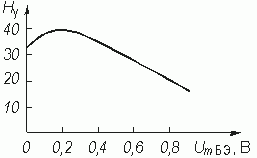
Ответ:  = 11,6 В.
= 11,6 В.